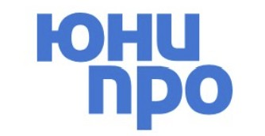
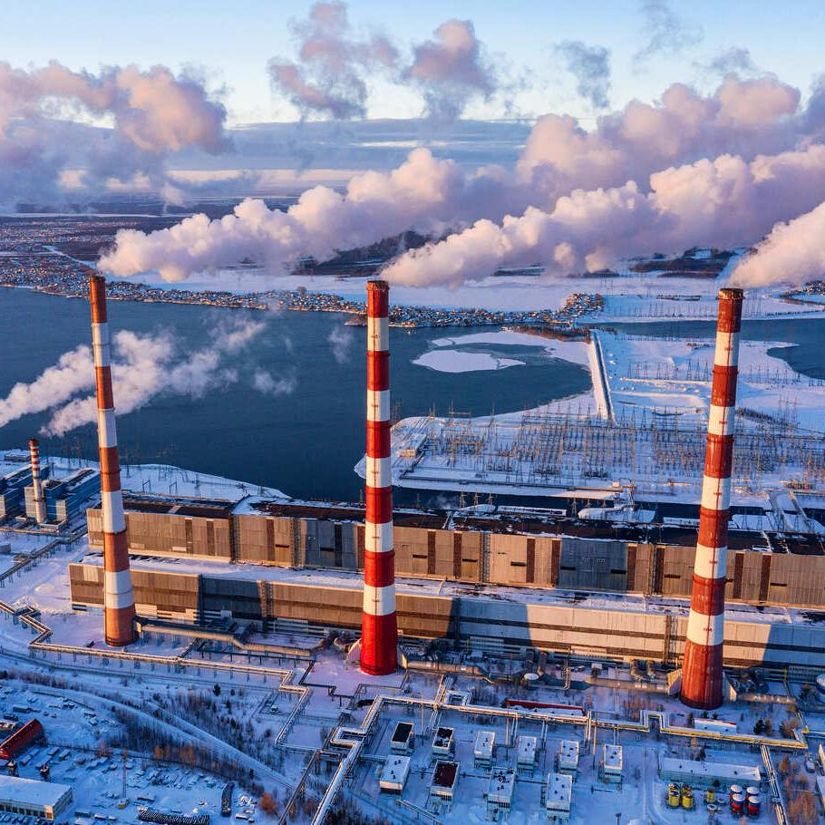
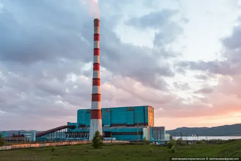
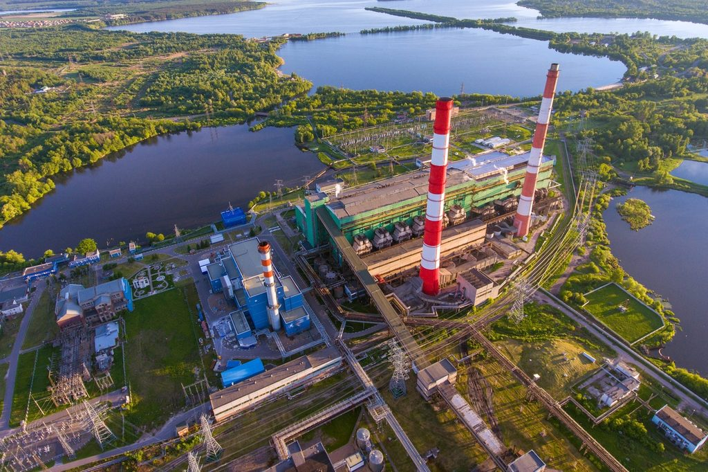

ПАО «Юнипро» (тикер UPRO)
О компании
ПАО «Юнипро» зарегистрировано 04 марта 2005 года в городе Сургут. Уставный капитал компании – 25 219 482 458,37 руб., номинал одной акции – 0,4 руб.
Основной вид деятельности – производство и продажа электрической энергии и мощности. ПАО «Юнипро» также представлено на рынках распределенной генерации и инжиниринга в Российской Федерации.
Согласно Указу Президента Российской Федерации № 302 от 25 апреля 2023 года 83,73% акций ПАО «Юнипро», принадлежащих концерну Uniper SE, переданы во временное управление Федеральному агентству по управлению государственным имуществом (Росимущество).
В состав ПАО «Юнипро» входят пять тепловых электрических станций общей мощностью 11 320,243 МВт: Сургутская ГРЭС-2 (5722,243 МВт), Березовская ГРЭС (2420 МВт), Шатурская ГРЭС (1500 МВт), Смоленская ГРЭС (630 МВт), и Яйвинская ГРЭС (1048 МВт).
Направления деятельности
- Производство электроэнергии и тепла
- Продажа мощности на оптовом рынке
- Теплоснабжение и водоснабжение городов
- Охрана здоровья и обеспечение безопасности труда
- Охрана окружающей среды и экология
Акции: торгуются на Мосбирже (тикер UPRO).

Сургутская ГРЭС-2 - один из ключевых активов Юнипро
История и основатели
Основатели: коллектив профессионалов при поддержке E.ON, после 2016 года управление перешло российскому менеджменту.
Ключевые этапы: 2005-2010 - ввод мощностей Сургутской ГРЭС-2 и Шатурской ГРЭС; 2016 - ребрендинг в Юнипро; 2020-2024 - цифровизация станций.

Берёзовская ГРЭС - высокоэффективная станция компании.
Современность и экология
Юнипро внедряет программы снижения выбросов и участвует в водородной когенерации.
Показатели
- Выручка 2023: >125 млрд руб.
- Персонал: более 4000 сотрудников.
- Стратегия: надёжная энергия для будущего.

Шатурская ГРЭС - исторический актив